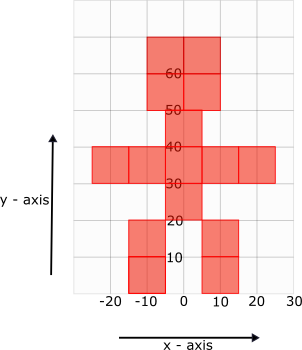
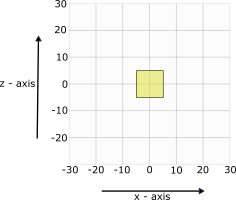

The Giant
-
Create a new TL-Engine project and name it Lab1_Giant_Project.
-
Add a FPS camera to your project.
Create an IMesh* variable and load a cube mesh ("Cube.x") into it.
In the lab we measured the length of the sides of the cube model using a grid. We found that it has sides of length 10. With that measurement, The Giant can be represented as a collection of cubes in a 2D grid (showing x and y axes).
You are to use the image provided above as a blueprint for creating The Giant.
From the image youd shoule be able, you can see that you need 15 cube models to create the structure. Therefore, declare 15 IModel* variables, name them appropriately (or you will, without doubt, confuse yourself), and create a model for each using the cube mesh.
The the Giant should stand at the origin, therefore, all the cubes that make it up should have 0 as their z-cordinate position.
However, each cube has a different x and y cordinate, and by looking at the 2D image of The Giant, you can easily identify the x and y coordinates for each cube by drawing a line form the center of each cube to the x and y axis.
For example, the bottom left block is positioned at x = -10 and y = 5, therefore it should be created using CreateModel( -10, 5, 0 ); and the bottom right block is positioned at x = 10 and y = 5, therefore is should be created using CreateModel( 10, 5, 0 );
Now use the blueprint to figure out the position of all the cubes that make up The Giant, and write the code in your program to position them. You can also use the interactive scene below, by moving the tiled cube, to figure out the position of each of the 15 cubes that make up the giant and then add it to your code.
The Pyramid
-
Create a new TL-Engine project and name it Lab1_Pyramid_Project.
-
Add a FPS camera to your project.
Load a cube mesh ("Cube.x") and a sphere mesh ("Sphere.x").
The Pyramid has three layers, and a sphere on the top of the top layer. Therefore you will be working with 4 y-cordinates: one for the cube(s) in each layer; and one for the sphere at the top.
The bottom layer is made up of 8 cubes shown in the 2D grid below (showing x and z axes). Therefore declare 8 IModel* varaiables, create a cube model for each, and then position them using the cordinates provided by the image.

The middle layer is made up of 4 cubes shown in the 2D grid below (showing x and z axes). Therefore declare 4 IModel* varaiables, create a cube model for each, and then position them using the cordinates provided by the image.

Remember that this layer should be placed on top of the bottom layer, therefore the y-cordinate for the cubes in this layer should be above the y-cordinate of the cubes in bottom layer.
The top layer is made up of a single cube shown in the 2D grid below (showing x and z axes). Therefore declare an IModel* varaiable, create a cube model for it, and then position it using the cordinates provided by the image.
Remember that this layer should be placed on top of the middle layer, therefore the y-cordinate for the cube in this layer should be above the y-cordinate of the cubes in middle layer.
Finally, declare an IModel* varaiable, create a sphere model for it, and then position it using the cordinates provided by the image below:

Remember that this sphere should be placed on top of the top pyramid layer, therefore the y-cordinate for the sphere should be above the y-cordinate of the cube in top layer.
For a final touch, add code to rotate the sphere slowly along its x-axis.
HINT